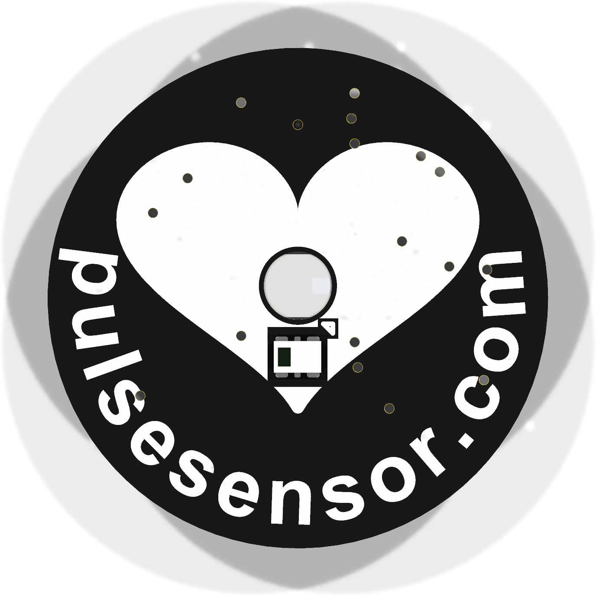
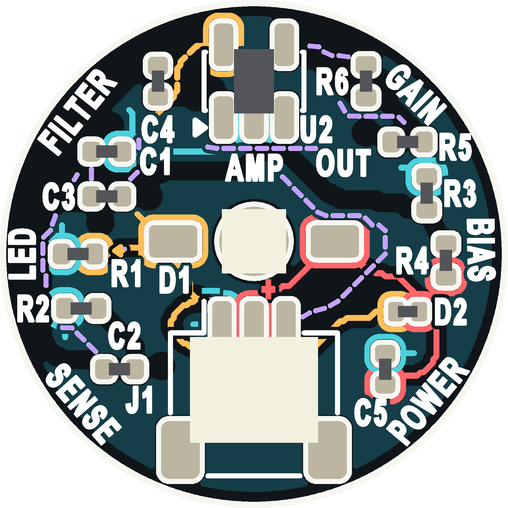

Selected monochrome: 08 · PCBWay color-print iteration: 10 · Native CAD and manufacturing review files


Solid colored routes follow the circuit-side copper. Dashed colored routes project copper from the opposite side. The dark blue area shows the circuit-side ground plane. Gaps protect text and solder openings. Amber is used for two separate nets: protected supply and LED cathode; matching color does not imply they connect.
These are colored printed paths over intact solder mask. No conductor was exposed. The LED and optical sensor remain fixed, and all copper and component positions are unchanged from the previous candidate.
Browse all contact sheets · Latest comparison sheet · Monochrome back · Full component-function guide
Monochrome package · PCBWay color package · 1:1 color print PDF · Editable vector artwork · Native color-reference CAD
| PCBWay | Full-color UV confirmed. Separate print and positioning files. Full-area printed side uses white mask plus our dark UV background. |
|---|---|
| JLCPCB | Multicolor confirmed. Requires EasyEDA Pro color production files; white mask, ENIG and panel/assembly constraints need a separate conversion. |
| MacroFab | Selectable silkscreen colors documented; full-color printing not verified. |
Official sources and process details
Electrical/geometry comparison passed. Only the original optical courtyard DRC exception remains. Mechanical evidence, human manufacturing review, supplier color/process proof and release approval remain open. PCBWay must confirm the requested white F / black B mask combination. KiCad’s mixed-mask rendering limitation is logged; the printed-color reference controls the intended appearance.
Complete notes · Verification evidence{kind=link}
{kind=link}
{kind=link}
{kind=link}
{kind=link}